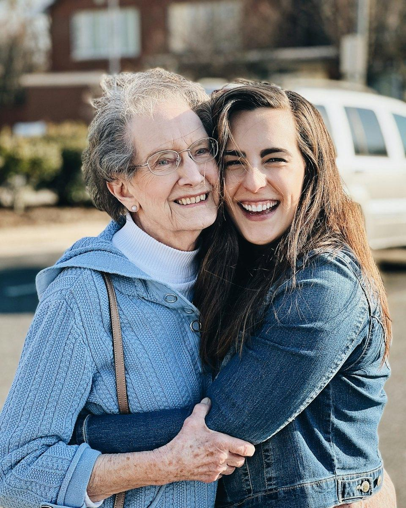
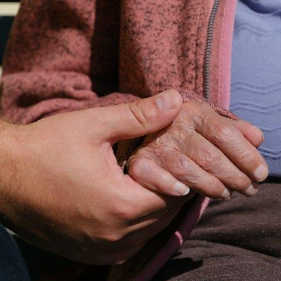

Hakkımızda
Bakımı bir aile sıcaklığıyla sunuyoruz
Irmak Danışmanlık; yaşlı ve bakıma ihtiyaç duyan bireylerin kendi evlerinde güvenli, onurlu ve huzurlu bir yaşam sürdürebilmeleri için profesyonel bakım hizmeti sunar.

Ailelere verdiğimiz sözler
- Ücretsiz ön görüşme ve ihtiyaç değerlendirmesi
- Hizmet öncesi yazılı sözleşme
- Bakıcıyla önceden tanışma imkânı
- Uyum sağlanamazsa bakıcı değişikliği
- 7/24 ulaşılabilir bakım danışmanı
- Ailenize ait bilgilerin gizliliği
Biz Kimiz?
Sevdiklerinizin yanında, ailenizin bir parçası gibi
Irmak Danışmanlık, yaşlı ve bakıma ihtiyaç duyan bireylerin kendi evlerinde güvenli ve huzurlu bir yaşam sürdürebilmeleri amacıyla kurulmuş bir bakım hizmetleri kuruluşudur. İstanbul ve çevresinde ailelere; evde yaşlı bakımı, yatılı ve gündüzlü bakıcı, evde hasta bakımı, Alzheimer ve demans bakımı, hastane refakatçi ve çocuk bakımı hizmetleri sunuyoruz.
Bir yakınınız için bakım desteği aramanın; endişe, belirsizlik ve çoğu zaman zaman baskısıyla dolu bir süreç olduğunu biliyoruz. Bu nedenle ilk telefon görüşmesinden itibaren sizi dinliyor, sorularınızı açık ve dürüst bir şekilde yanıtlıyor, kararınızı verebilmeniz için ihtiyaç duyduğunuz tüm bilgiyi paylaşıyoruz.
Bakıcı ekibimiz Türk, Özbek ve Türkmen bakıcılardan oluşur. Ailelerin dil, kültür ve alışkanlık tercihlerini dikkate alarak her eve en uygun bakıcıyı yönlendiriyoruz.
Bizim için iyi bakım; yalnızca fiziksel ihtiyaçların karşılanması değil, bakım alan kişinin alışkanlıklarına, mahremiyetine ve kişiliğine saygı duyulmasıdır. Bakıcılarımızı bu anlayışla seçiyor, her aileyle uzun soluklu bir güven ilişkisi kurmayı hedefliyoruz.
Bakıcı Ekibimiz
Türk, Özbek ve Türkmen bakıcılarımız
Ekibimizde Türk, Özbek ve Türkmen bakıcılar bulunur. Bir tercihiniz varsa ön görüşmede belirtmeniz yeterli. Uyruğu ne olursa olsun her bakıcımız aynı kimlik, referans ve mülakat sürecinden geçer.
Bakıcı talep edinTürk bakıcılar
Türk aile yapısını, mutfağını ve gündelik alışkanlıklarını yakından bilen; yaşlı, hasta ve çocuk bakımında deneyimli bakıcılar.
Özbek bakıcılar
Yaşlı, hasta ve çocuk bakımında deneyimli, Türkçe iletişim becerisi mülakatla değerlendirilmiş Özbek bakıcılar. Yatılı ve gündüzlü çalışabilir.
Türkmen bakıcılar
Türkçeye yakın bir dil konuşan, Türkçe iletişim becerisi mülakatla değerlendirilmiş, deneyimli Türkmen bakıcılar. Yatılı ve gündüzlü çalışabilir.
Misyon · Vizyon · İlke
Her gün bizi yönlendiren amaç
Misyonumuz
Yaşlı ve bakıma ihtiyaç duyan bireylerin kendi evlerinde güvenli ve onurlu bir yaşam sürdürmelerine; ailelerin de içleri rahat bir şekilde günlük hayatlarına devam etmelerine destek olmak.
Vizyonumuz
İstanbul ve çevresinde güvenilirliği, şeffaflığı ve insana saygılı bakım anlayışıyla ailelerin ilk tercih ettiği bakım hizmetleri kuruluşu olmak.
İlkemiz
Her bakım alan kişiye, kendi anne ve babamıza göstermek isteyeceğimiz sabır, saygı ve özenle yaklaşmak.
Değerlerimiz
Bizi biz yapan değerler
Sunduğumuz her hizmetin ve verdiğimiz her kararın arkasında bu altı değer bulunur.
- Saygı ve onur
Bakım alan kişinin mahremiyetine, alışkanlıklarına ve kararlarına her zaman saygı gösteririz.
- Güven
Evinize yönlendirdiğimiz her bakıcının güvenilirliğinden sorumluluk duyarız.
- Şeffaflık
Hizmet kapsamını, ücretleri ve süreci baştan açık ve yazılı olarak paylaşırız.
- Süreklilik
Bakımın kesintisiz sürmesi için izin ve değişim süreçlerini önceden planlarız.
- Gizlilik
Ailenize ve sağlık durumunuza ilişkin bilgileri gizli tutar, yalnızca bakım amacıyla kullanırız.
- Empati
Her ailenin hikâyesini dinler, kendimizi onların yerine koyarak çözüm üretiriz.
Bakıcı Seçim Standartlarımız
Evinize gelen her bakıcıyı titizlikle seçiyoruz
Ailenizin güvenliği bizim önceliğimiz. Ekibimize katılan her bakıcı, çok aşamalı bir değerlendirme sürecinden geçer. Bakıcıyla tanışmadan ve onayınızı almadan hizmet başlamaz.
Bakıcı talep edin
Doğru eşleştirme: Bakıcıyı yalnızca deneyime göre değil; karakter, alışkanlık ve iletişim uyumuna göre seçiyoruz.
Kimlik ve adli sicil kontrolü
Tüm bakıcılarımızın kimlik bilgileri ve güncel adli sicil kayıtları kontrol edilir.
Referans doğrulaması
Daha önce çalıştıkları aileler ve kurumlarla görüşülerek referansları doğrulanır.
Yüz yüze mülakat
Deneyim, iletişim becerisi, sabır ve empati düzeyi birebir görüşmelerle değerlendirilir.
Sağlık uygunluğu
Bakım hizmeti vermeye engel bir sağlık sorunu bulunmadığı belgelenir.
Eğitim ve bilgilendirme
Kişisel bakım, hijyen, düşme önleme, ilaç takibi ve acil durumda doğru davranış konularında bilgilendirilir.
Sürekli takip
Bakım süresince aileden düzenli geri bildirim alınır, hizmet kalitesi sürekli izlenir.
Nasıl Çalışıyoruz?
Dört adımda huzurlu bir bakım süreci
İlk görüşmeden bakımın başlamasına kadar tüm süreci sizin için planlıyor, bakım süresince de yanınızda olmaya devam ediyoruz.
Ücretsiz ön görüşme
Telefonla veya WhatsApp üzerinden bize ulaşın; ihtiyaçlarınızı dinleyip size uygun hizmet modelini anlatalım.
İhtiyaç değerlendirmesi
Bakım alacak kişinin sağlık durumunu, günlük rutinini ve evin koşullarını birlikte değerlendirelim.
Bakıcı eşleştirme
Kriterlerinize uygun bakıcı adaylarını size sunuyor, tanışma görüşmesini birlikte organize ediyoruz.
Bakım ve düzenli takip
Bakım başladıktan sonra sizinle düzenli iletişimde kalıyor, hizmet kalitesini sürekli takip ediyoruz.
Ücretsiz Danışmanlık
Sevdiklerinizin bakımı için bugün konuşalım.
Ücretsiz ön görüşme için hemen arayın ya da WhatsApp’tan yazın. İstanbul ve çevresinde size en uygun bakım modelini birlikte belirleyelim.